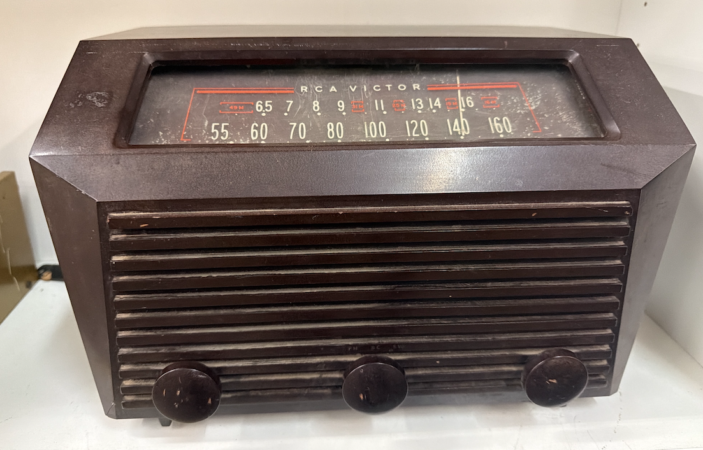
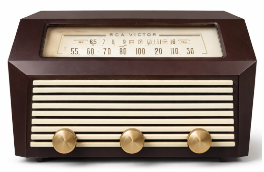

1949 RCA Victor — Raspberry Pi NAS TimeMachine
It started with a $10 broken radio at a home-staging company's liquidation sale, a bakelite cabinet that's survived 75 years of workshops, moves, and neglect, a Raspberry Pi 5, and a couple of external hard drives that needed a place to live.
The idea: gut the original electronics but keep the soul. Refinish the bakelite casing to a deeper chocolate brown. Swap the plastic knobs for period-correct brass. Add a softly backlit dial. Replace the tired grille fabric with something warmer. Inside the cabinet, hide a fully functional NAS and Time Machine server.
When it's done, it'll sit on a shelf and look exactly like a 1949 radio.
This build won't be quick. Bakelite restoration has a learning curve all its own. But the work is half the point, and the documentation will be worth it.